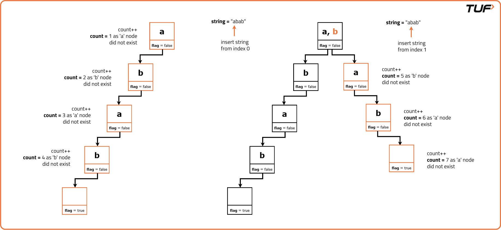
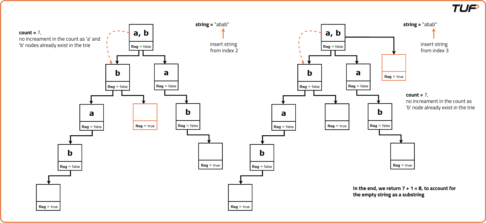

Number of Distinct Substrings in a String Using Trie
Problem Description: Implement a program that takes a string 'S' as input and returns the number of distinct substrings of the given string, including the empty substring. Use a trie data structure to accomplish this.
Note:
1. A string ‘B’ is considered a substring of a string ‘A’ if ‘B’ can be obtained by deleting zero or more characters from the start and end of ‘A’.
2. Two strings ‘X’ and ‘Y’ are considered different if either their length is different or there is at least one index ‘i’ such that the character of ‘X’ at index ‘i’ is different from the character of ‘Y’ at index ‘i’ (i.e., X[i] != Y[i]).
Examples
Input: s = "aba" Output: 6 Explanation: The distinct substrings are "a", "ab", "ba", "b", "aba", "". Input: s = "abc" Output: 7 Explanation: The distinct substrings are "a", "ab", "abc", "b", "bc", "c", "".
Disclaimer: Here is the practice link to help you assess your knowledge better. It's highly recommend trying to solve it before looking at the solution.
Brute-Force Approach
Algorithm
- Initialise an empty set to store distinct substrings.
- Iterate through each character of the string. Start from the first character and iterate through each subsequent character.
- For each starting character, construct all possible starting from that character using nested loops.
- The outer loop iterates over each character, acting as the starting point of the substring. The inner loop iterates over the subsequent characters to construct the substring.
- Add each constructed substring to the set. Return the set containing all distinct substrings of the given string.
Code
#include <bits/stdc++.h>
using namespace std;
// Solution class to find all distinct substrings of a string
class Solution {
public:
// Function to count all distinct
// substrings of a given string
set<string> countDistinctSubstrings(const string& s) {
// Set to store
// distinct substrings
set<string> st;
// Length of the
// input string
int n = s.length();
// Iterate over each
// character in the string
for (int i = 0; i < n; i++) {
// Initialize an empty string
// to store the current substring
string str = "";
// Iterate over the remaining characters
// in the string starting from index i
for (int j = i; j < n; j++) {
// Append the current
// character to the substring
str += s[j];
// Insert the current
// substring into the set
st.insert(str);
}
}
// Return the set containing
// all distinct substrings
return st;
}
};
int main() {
string s = "striver";
cout << "Given String: " << s << endl;
Solution sol;
// Call the function to
// count distinct substrings
set<string> substrings = sol.countDistinctSubstrings(s);
int count = 0;
// Print the distinct substrings
cout << "Distinct Substrings:" << endl;
for (const auto& substr : substrings) {
cout << substr << endl;
count++;
}
// Count + 1 as we have to count
// the empty string as well
cout << "Number of distinct substrings: " << count + 1 << endl;
return 0;
}
Complexity Analysis
Time Complexity: O(N*N)., we generate all possible substrings starting from all possible indices.Space Complexity: O(N*N), maximum number of substrings that the set can hold.
Optimal Approach
Algorithm
The Trie also uses memory efficiently by storing only the necessary information and avoids redundancy by sharing common prefixes among substrings for better space utilisation especially for long strings with many repeated substrings. Read more about the Implementation of a Trie here: Implement Trie | Search | Insert | Startswith
- Initialise a root node for the Trie. Iterate through the input string and for each character: Traverse the trie, creating new nodes as necessary to represent the substrings formed by the characters seen so far.
- Initialise a counter to keep track of the number of the number of distinct substrings.
- Iterate through all possible starting positions ‘i’ of the substring. Start from the ‘root’ node for each substring. For each character at index ‘j’ in the substring starting from position ‘i’:
- Check if the current node has a child node corresponding to the character at index j.
- If not, insert a new child node for character at index j and increment the counter since a new substring is found.
- Move to the child node corresponding to the character at index i.
- Repeat this process for all substrings starting from position ‘i’.
- Return the total count of distinct substrings + 1 added to account for the input string itself.


Code
#include <bits/stdc++.h>
using namespace std;
// Node structure representing
// each node in the trie
struct Node {
Node* links[26];
// Array of pointers to child nodes,
// each corresponding to a letter
// of the alphabet
bool flag = false;
// Flag indicating if the current
// node represents the end of a substring
// Method to check if a specific character key
// exists in the children of the current node
bool containsKey(char ch) {
// Check if the current node has a child node
// corresponding to character 'ch'
return (links[ch - 'a'] != NULL);
}
// Method to get the child node corresponding
// to a specific character key
Node* get(char ch) {
// Get the child node
// corresponding to character 'ch'
return links[ch - 'a'];
}
// Method to insert a new child
// node with a specific character key
void put(char ch, Node* node) {
// Insert a new child
// node for character 'ch'
links[ch - 'a'] = node;
}
// Method to mark the current
// node as the end of a substring
void setEnd() {
// Mark the current node
// as the end of a substring
flag = true;
}
// Method to check if the current
// node marks the end of a substring
bool isEnd() {
// Check if the current node
// marks the end of a substring
return flag;
}
};
// Solution class to count distinct substrings using Trie
class Solution {
public:
// Function to count the number of
// distinct substrings in the given string
int countDistinctSubstrings(string &s) {
// Function to count distinct
// substrings in the input string 's'
Node* root = new Node();
// Creating the root
// node of the trie
int cnt = 0;
// Counter to keep track
// of distinct substrings
int n = s.size();
// Length of the input string
// Nested loops to iterate through all
// possible substrings of the input string
for (int i = 0; i < n; i++) {
// Iterate through each
// starting position of the substring
Node* node = root;
// Start from the root for each substring
for (int j = i; j < n; j++) {
// Iterate through each character of the substring
// If the current character is not a child
// of the current node, insert it as a new child node
if (!node->containsKey(s[j])) {
node->put(s[j], new Node());
// Insert a new child
// node for character s[j]
cnt++;
// Increment the counter
// since a new substring is found
}
node = node->get(s[j]);
// Move to the child node
// corresponding to character s[j]
}
}
// Return the total count of distinct substrings
// (+1 to account for the input string itself)
return cnt + 1;
}
};
int main() {
// Main function to test the
// countDistinctSubstrings function
string s = "striver";
cout << "Current String: " << s << endl;
Solution sol;
// Input string
cout << "Number of distinct substrings: " << sol.countDistinctSubstrings(s) << endl;
return 0;
}
Complexity Analysis
Time Complexity: O(N^2), We consider all substrings of a string with length n. For each substring, inserting characters into the Trie takes up to O(n) in the worst case.Space Complexity: O(N^2), additional space used for storing total number of substring in the trie.